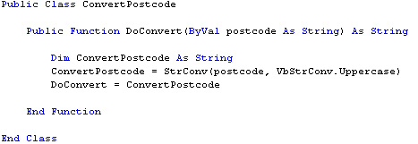
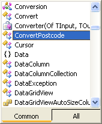
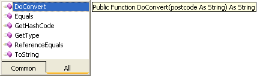

Create Methods in your VB .NET Classes
If you haven't yet read the introduction to Classes, here it is: VB .NET Classes and Objects.
A method created in a Class is nothing more that a Function or a Sub. You've seen how to do this in an earlier section. The process is the same. So add the following code to the Class you created for the previous lesson:
Public Function DoConvert(ByVal postcode As String) As String
Dim ConvertPostcode As String
ConvertPostcode = StrConv(postcode, VbStrConv.UpperCase)
DoConvert = ConvertPostcode
End Function
When you've finished typing it all, you Class should look like this in the code window:

All we've done is to set up a Public (not private) function. We've given it the name "DoConvert". We've set it up to accept one parameter, a String variable called postcode. This is the value that will be handed to our function. The function itself has been set up as a String. This means that DoConvert will be just like a string variable that we can assign a value to.
The code itself you've met before. It uses the in-built StrConv function to do the actual job of converting the string to uppercase letters.
Now that we've set up a Method, let's see how to create an object from our Class, and put the Method to use.
No more reading these lessons online - get the eBook here!
Creating an Object from a Class
Our function is not much use until we can get it up and running. (Here, "Get it up and running" means create an object from our class.) To do that, double click the button on your Form, and add the following code to it:
Dim NewCode As String
Dim objConvertPostcode As ConvertPostcode
objConvertPostcode = New ConvertPostcode
NewCode = objConvertPostcode.DoConvert(TextBox1.Text)
TextBox1.Text = NewCode
The first line just sets up a new String variable called NewCode. Whatever is returned from our function will be stored inside of this variable.
The next line is where the action starts:
Dim objConvertPostcode As ConvertPostcode
The variable name objConvertPostcode is just something we made up ourselves. The "obj" prefix means Object, and this is for our benefit, to remind us that the type of data inside it holds an Object, rather than a plain old Integer or String.
After you type the word "As", then hit your spacebar, you'll see s popup box appear. If you type the letters "conv", you'll see the list automatically move down. The Class your created should be on that list, as in the next image:

You can double click the name of your Class to add it to your code (or press the Tab key on your keyboard).
But what you're doing in this step is setting up a pointer to your Class. You're telling VB where the Class can be found, and then storing this inside of the variable called objConvertPostcode. If VB doesn't know where your Class is then it can't create an Object from it.
The next line of code is the one that creates a new object from your Class:
objConvertPostcode = New ConvertPostcode
You type the Name of your variable first, then an equals sign. To the right of the equals sign comes the word "New". This is what tells VB to create a New Object. And the class its creating the New Object from is the one called ConvertPostcode.
You can actually type all of that on the same line:
Dim objConvertPostcode As ConvertPostcode = New ConvertPostcode
This does two jobs: sets a pointer to where the Class is, and creates a new Object from the Class.
But there's reasons why you don't want to do it this way. One is that Objects take up space in memory. And you only really need to create them when they are needed. For example, what if the textbox was blank? You'd want to check for this and invite the user to try again. If you've written everything on one line, then you've already created the Object before the Textbox has been checked. Instead, you could do something like this:
If TextBox1.Text = "" Then
MsgBox "Please try again"
Exit Sub
Else
objConvertPostcode = New ConvertPostcode
End If
Here's, the textbox is being checked first. If the user has left it blank then we bail out. If not, THEN we create an Object from our Class.
The next line in our code was this:
NewCode = objConvertPostcode.DoConvert(TextBox1.Text )
First, we type the name of the variable we want to store the result of our
Method into. In our case, the one called NewCode. After the equals sign, we
type the name of our Object variable:
objConvertPostcode
As soon as you type a full stop after your Object variable, you should see
a popup box with the name of your new method on the list:

The image above shows you that the name of our Method "Do Convert" has been recognised by VB. (You can tell it's a Method because of the purple block next to it.) But notice the tool tip - it's the first line from our Function!
In between the round brackets, VB is telling us what type of data needs to be passed over to the Method - a String of text. The second "As String" tells you that the Method returns a value that needs to be stored somewhere.
So if you've set up a Method that returns a value (a Function) then you need to store it in a variable.
To get at the Method inside of your class, first type the name of your Object variable. The type a full stop. Look for the name of your Method in the pop up list that appears.
The final line of the code just assigns the value returned from the Method back to the textbox:
TextBox1.Text = NewCode
Run your code and test it out. Click your Button and you should see the postcode change from "ts1 4jh" to "TS1 4JH".
In the next part, we'll study the subject of creating Methods some more.